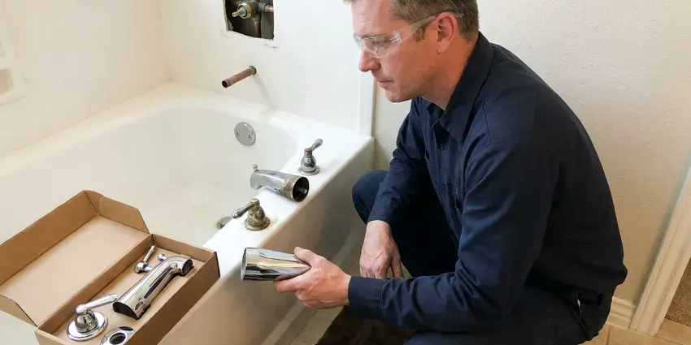

Sink Drain Replacement in Toledo, OH
From thin chrome traps to seized pop-ups, HRL Plumbing replaces sink drains in Toledo, OH.
- Same-Day Service Most Days
- Kitchen and Bath Drains
- Licensed Ohio Plumbers
- Full-Bowl Leak Test
Stopper Will Not Seal in Toledo, OH? Swap the Pop-Up.
Call (740) 449-7505 and tell us what the drain is doing. We price it before we start.
Kitchen and Bath Drain Replacement in Toledo, OH
Most drain replacements we do in Toledo, OH start with rust. Thin chrome and brass drains rot from the inside out, and you usually see it first as a drip or rust flakes in the cabinet. Those parts cannot be tightened back to dry. New PVC or heavy-gauge brass will hold.
Some of what we do:
- Cut back corroded wall stubs to solid pipe
- Swap kitchen basket strainers and tailpieces
- Replace rusted chrome traps with PVC or thick brass

Additional Bathroom Plumbing Services in Toledo, OH
From toilets to showers, our bathroom plumbing team in Toledo, OH repairs, installs, and replaces every fixture with clean, code-compliant work.


Customers
Why Choose HRL Plumbing for Sink Drain Replacement in Toledo, OH?
A new drain should drain faster, not just stop leaking. We remove undersized adapters, size parts correctly, and empty a full bowl to check the flow. A slow new drain points to the vent.
- Matched Finishes, Chrome, brushed nickel, matte black and bronze drains to match your faucet.
- Complete Assemblies, We replace the drain from the bowl to the stub, not one nut at a time.
- Local Expertise, We see a lot of old steel drain arms in older Toledo homes and carry couplings for them.
Citywide Coverage
Rental properties are covered too. For rentals we arrange access with the manager and leave a written repair note for the owner. Tenants need not be home.
Experienced Team
Clean habits come standard. Each plumber uses shoe covers, a cabinet mat and a bucket for the old trap water. Rusty parts leave with us.
Safety-First Approach
Water stays off until the drain is sealed. We tell everyone in the house not to run that sink, tape the faucet handle if needed, and test the new joints with a full bowl before anyone uses it again. Nothing ends up on the floor.
Trusted Certified Toledo Plumbing Services Professionals
At HRL Plumbing, we take pride in licensed, certified plumbing services throughout Toledo, OH. Those papers on the wall mean something. Every repair, install and maintenance visit follows strict safety and quality rules, and the plumbers doing the work carry recognized industry credentials.
Call Us Now PHCC Plumbing Contractor Recognition
PHCC Plumbing Contractor Recognition Better Business Bureau (BBB) Accreditation
Better Business Bureau (BBB) Accreditation Angi Certified Pro
Angi Certified Pro ISO 9001 Quality Management Certification
ISO 9001 Quality Management CertificationFrom Strainer to Wall Stub in Toledo, OH
Trap Arm and Wall Drain Repair in Toledo, OH
Leaks right at the wall point to the trap arm or stub. A cracked trap arm or a stub rusted through behind the escutcheon will drip down the inside of the cabinet back panel, where you only notice it when the wood swells or the cabinet smells musty. We cut back to solid pipe. Then new PVC gets tied in.

Corroded Drain Replacement in Toledo, OH
Drain cleaners speed up corrosion. Caustic products sit in the bottom of a metal trap between uses and eat at the chrome plating and the thin brass underneath, which is why so many old traps we pull have pinholes right at the bottom of the bend. Plastic traps resist that damage. We recommend it for most cabinets.
Drain Replacement vs Repair Costs in Toledo, OH
A single washer is cheaper today. On a drain past fifteen years old, the next joint often goes soon, and repeat calls cost more than one replacement. You see both options in writing. Your call.
Bathroom Sink Drain Replacement in Toledo, OH
Bathroom drains wear out at the pop-up. The pivot nut packing leaks, the drain body corrodes around the overflow holes, and the stopper stops sealing, so a sink that will not hold water usually needs a whole new pop-up assembly. Patching one piece rarely works. The new drain matches your faucet finish.
P-Trap Replacement in Toledo
Thin chrome traps are the ones we replace most. They rust from the inside, the plating flakes off, and a slip nut that will not loosen often twists the whole trap apart, so we cut it out and install heavy-wall PVC or polished brass that matches the room. The new trap gets a full flow test. Total time is often under an hour.
Pop-Up Drain Replacement in Toledo
Lift-rod pop-ups are the most common bath drain. The old body comes out, the seat gets cleaned, and the new flange goes in sealed with a clevis set for easy lifting. We match the faucet finish. Overflow-style drains are standard.
Kitchen Sink Drain Replacement in Toledo
Kitchen drains start failing at the basket strainer. Old strainer putty dries out and the locknut rusts, so water runs down the tailpiece and looks like a trap leak. Strainer and trap get swapped as a pair. Disposal sinks get a new flange instead.

Kitchen Drain and Disposal Tie-In in Toledo
Disposals change the kitchen drain. The disposal outlet must sit above the trap, the dishwasher hose needs a high loop or air gap, and nothing can pull sideways. They all get set together. Then the disposal runs with water while we watch.
Sink Drain Replacement Near Me in Toledo, OH
Near me also means near after the job. Should a joint weep later, the same plumber is nearby and returns under warranty within a day. Callbacks are rare.
Local plumbers see the same drains over and over. Homes in one subdivision usually share the same builder-grade pop-ups and traps, so we often know what we will find in your cabinet before we open the door. It makes the job quicker.
HRL Plumbing at a Glance
- Fully licensed plumbing team covering Toledo, OH
- Same-day appointments and 24/7 emergency response
- Clear written estimates, no hidden fees
- 4.9-star rated by 673+ Ohio customers
Toledo Map
Toledo Information
- Population
- 265,304
- Area codes
- 419/567/330
- Service area
- Toledo and communities within 40 miles
- Nearby
- Lorain, Elyria, Mansfield, Lakewood
A working sink drain in Toledo, OH keeps water in the pipe and out of the cabinet. Homeowners around Toledo often install a softener to protect water heaters and reduce spotting on fixtures.
Talk to a Plumber
Reach out to HRL Plumbing for reliable plumbing work done by licensed pros in Toledo, OH.
Our Specialized Plumbing Services in Toledo, OH
At HRL Plumbing, we handle the full list of plumbing services across Toledo, OH. We go from leak detection all the way to full system installations, for homes and commercial buildings, and we do it quickly at a fair price. Explore our core services below:


How a Drain Replacement Goes in Toledo, OH
Here is how a sink drain replacement runs from your call to the final flow test.
Tell Us the Problem
Call (740) 449-7505 with the symptoms. We bring likely parts.
Remove the Old Drain
We take out the old trap and drain body and check the wall stub.
Install and Verify
The new drain goes in and gets tested at full flow with a dry towel under every joint.
Frequently Asked Questions About Sink Drain Replacement in Toledo
Most sink drain replacements cost $150 to $600. A trap or tailpiece swap sits near the bottom of that range, while a full assembly with a new strainer or pop-up, or a job that needs a rusted wall stub cut out, lands near the top. We quote it before any work.
A plastic trap swap is a reasonable DIY job. Pop-ups need a careful flange seal, and rusted stubs can snap inside the wall, so those are plumber jobs. Wall repairs get expensive fast.
Often, yes. Old drains lose inside diameter to rust and buildup, and the pop-up body on an older bath sink can be half blocked with hair and scale, so a smooth new path usually drains noticeably faster. A slow new drain points to the vent.
Keep chemicals out of the trap. Caustic drain cleaners eat at metal drains and soften plastic joints, so a hand auger, a hair catcher and a strainer basket do more good over time than anything you pour down the drain. Wipe greasy pans before washing.
Usually not. Like-for-like drain parts are repair work, but rerouting or in-wall pipe work can need a permit. We will tell you which applies.
Yes, on parts and labor. Our labor warranty covers the joints and the installation, and the drain parts carry the maker's warranty, which on many faucet-brand pop-ups runs for the life of the original owner. Keep the receipt.
About an hour for a bath sink. Kitchens run longer for the disposal and dishwasher, and a crumbling wall stub adds time. You get a time estimate first.
We do, along with chrome and bronze. Most faucet brands sell a pop-up drain in each faucet finish, so we can match the drain to the faucet exactly, and push-button drains come in the same range of finishes from most makers. Special finishes can take a day.
What Our Customers Say About Our Plumbing Experts

Monica A.
Our water bill nearly doubled in one month with no change in how we used water. The tech checked the meter, heard the leak under the hallway with his equipment, and opened a hole about a foot square. Fixed the same day.
Slab Leak Repair · Parma, OH
Greg S.
I manage a small strip center with six tenants. HRL Plumbing handles our annual backflow testing and fixed a recurring clog in the shared sewer line that had been backing into the nail salon. Their reports come in clean and on time.
Commercial Plumbing · Cleveland, OHBrian W.
I smelled gas behind the dryer and called right away. The plumber found a corroded flex connector, replaced it, and pressure tested the whole line before turning the gas back on. He let me watch the gauge hold steady for fifteen minutes.
Gas Line Repair · Cleveland, OH
Tyler J.
We bought a taller comfort height toilet for my dad, who just had knee surgery. The plumber pulled the old one, found the flange was cracked, and replaced it before setting the new bowl. Took about two hours.
Toilet Installation · Parma, OHJessica T.
We were adding a gas range in a kitchen remodel and needed a new line run from the meter. The plumber pulled the permit, ran the pipe through the crawl space, and had it inspected and approved within the week.
Gas Line Repair · Lorain, OHSofia M.
Two new toilets went in during one visit. The tech set them on new wax rings and swapped the old supply lines. He also noticed our bathroom faucet dripping and replaced the cartridge while he was there. No mess left behind.
Toilet Installation · Elyria, OH